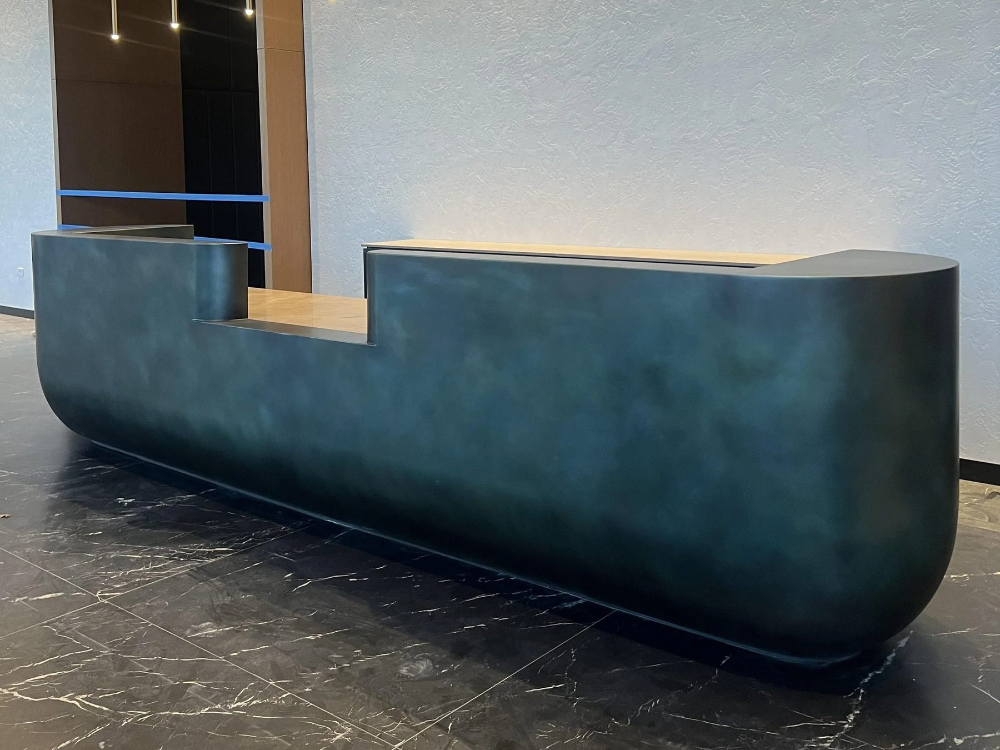
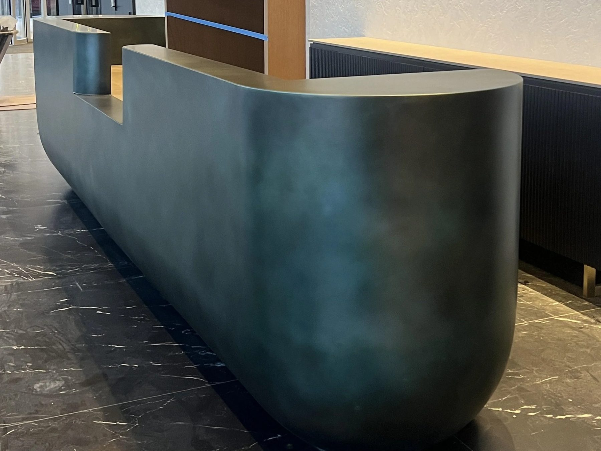
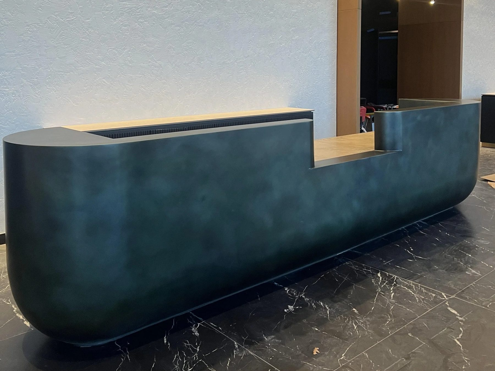
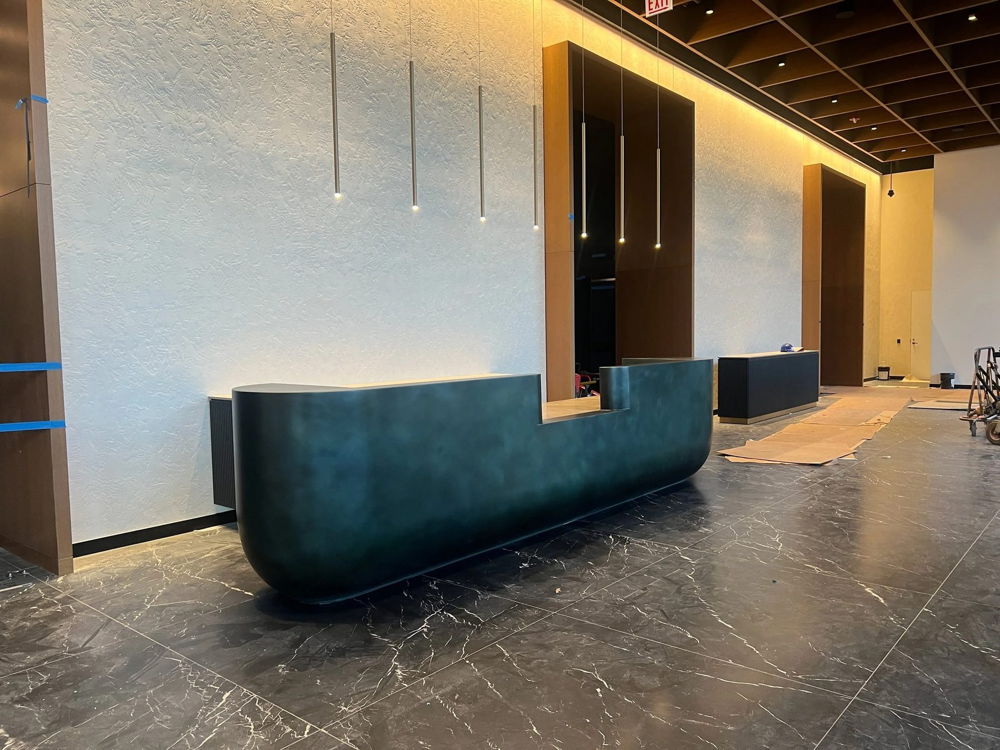
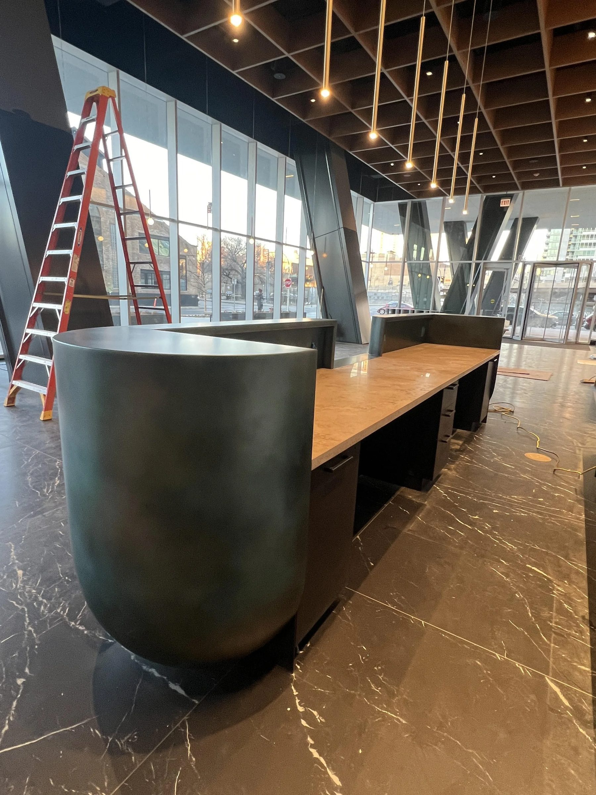
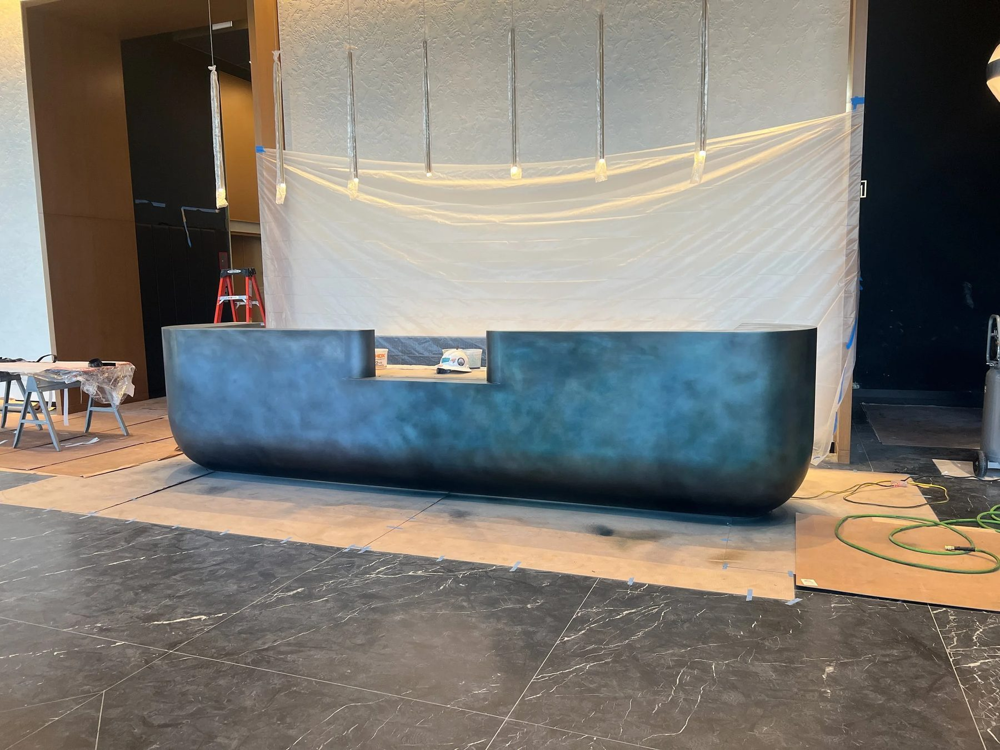
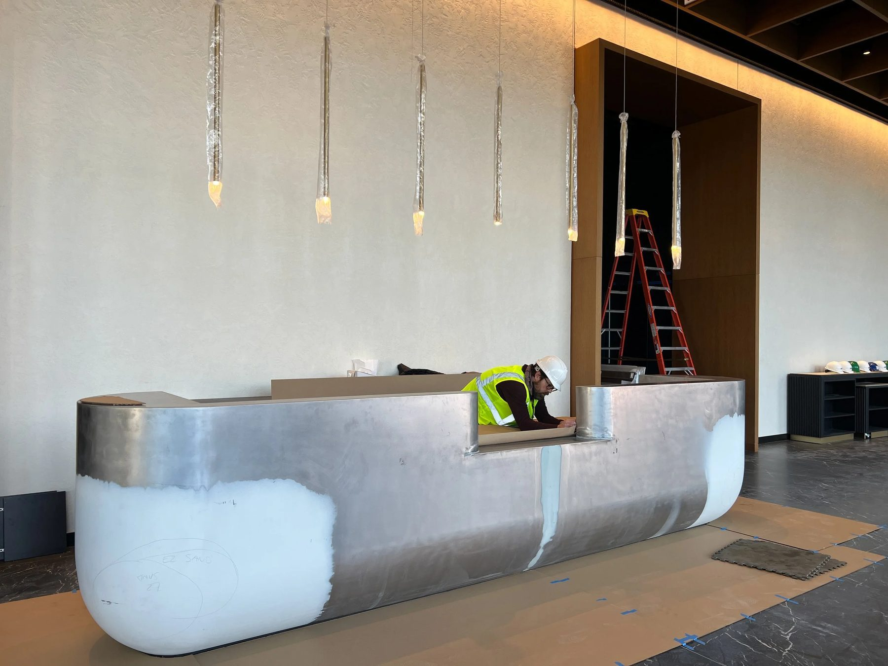
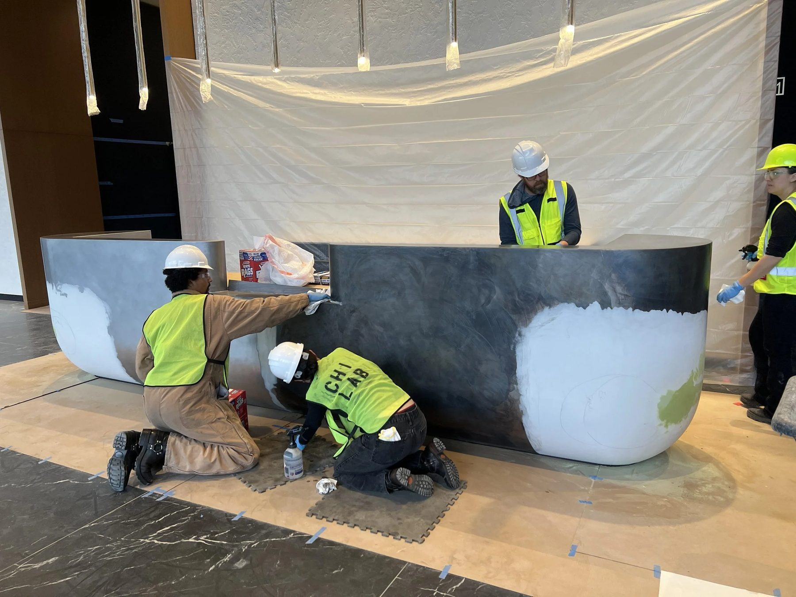
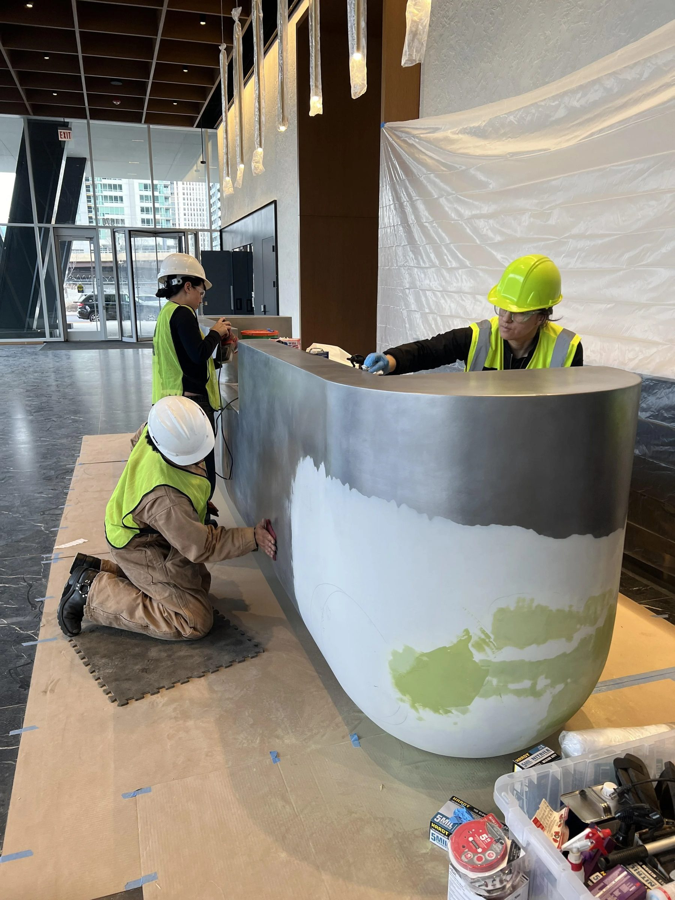

Architectural / 2024
360 N Green Reception
Sterling Bay
Reception desk for Sterling Bay at 360 N Green.
Reception desk at 360 N Green for Sterling Bay. Industrial design, architecture, and interior detailing carried through a single fabricated element.
Details
- Year
2024 - Location
Chicago, IL - Category
Architectural - Materials
Metal, stone, millwork
Credits
- Sterling Bay
Index








